I present a simple Python code to scale FITS images by using linear, sqrt, pow, log10, asinh function, zscale, logistic distribution as well as histogram equalization, and then save them to image files such as PNG. The code also includes simple methods to measure sky levels and to find adequate ranges of pixel values for the scaling routine. I hope that the code is useful in your works. I always welcome comments. Please, note that these Python codes are presented as examples rather than a complete software package. The img_scale.py can be easily incorporated to your own code for various scaling methods. In the given examples, you can figure out how several Python graphics modules (SciPy, Matplotlib, and Python Image Library) can be used to convert FITS files to conventional image files.
The image scaling is given in the module file img_scale.py. There are multiple example Python codes that generate RGB color images and generate single-band images. Please, read Lupton et al. (2004) about how to produce RGB images and scaling methods, and Lupton et al. (1999) about the asinh scaling. If you are looking for general introduction to this problem, you may find the Youtube video explanation "How scientists colorize photos of space" useful. The code presented here is not for interactive production of images. I also suggest people to check STIFF, which is quite useful in producing high-quality picture files, APLpy, and dmimg2jpg in CIAO, which support multiple scaling relations to produce RGB images. f2n.py is also a simple useful tool written in Python to convert FITS images to PNG files by using Python Image Library.
Conversion from astronomical images to conventional images consists of two steps as commonly used in tone mapping with high dynamic range images. In the first step, you can change the pixel values of FITS images to values between 0.0 and 1.0 by using img_scale.py. In the second step, these values are divided into 256 intervals for 8bit images, and then are saved as graphic files.
Download : public_fits_image.tar.gz
The above file has example codes and FITS files as example data, as well as img_scale.py. The code needs NumPy. PyFITS is also required to read FITS files. The code build_rgb_w_asinh_SciPy.py uses SciPy to produce image files. Meanwhile, the code build_single_matplotlib.py and build_rgb_w_asinh_matplotlib.py use Matplotlib instead of SciPy. If you want to use Python Image Library (PIL) instead of Matplotlib and SciPy, check build_rgb_w_asinh_PIL1.py or build_rgb_w_asinh_PIL2.py. When you want to change color maps for a single-band image by using Matplotlib, look up the tables for the color maps (1D and 2D). The following are example pictures. When producing the following pictures, the pixel values of the FITS files were scaled down to some ranges which are divied into 256 intervals equally. Pixel values for images are assigned as nearest value for the 256 intervals. You might be interested in Matplotlib color maps to visualizae a single-band image by using Matplotlib. You also might be interested in interactive tools which can read high-dynamic range FITS images and can convert them to other formats. DS9 and Aladin are well-known tools in the astronomy community. ImageJ can be also used for this purpose with lots of image analysis methods.
* FAQ
- How can I change the size of output images?
If you use Matplotlib to produce images, use the statements such as the following:
fig = pylab.gcf()
fig.set_size_inches(3.4,3.4)
rgb_array[:,:,0] = r
rgb_array[:,:,1] = g
rgb_array[:,:,2] = b
print "Plotting a RGB image of (", width,",",height,")"
pylab.imshow(rgb_array, interpolation='nearest', origin='lower')
pylab.axis('off')
pylab.savefig(out_fn, dpi=(300))
where sizes are given in inches, and dpi is set to change the resolution. If you use
Python Image Library to generate images, you can use resize function as the following does.
use_image = Image.new('RGB', size=(height, width))
use_image.putdata(PIL_data)
use_image = use_image.resize((height/2,width/2))
use_image.save('rgb.png')
SciPy also supports the resize function as the following shows if you want
to use SciPy instead of Matplotlib or PIL.
rgba_array = numpy.empty((width,height,4), numpy.uint8) # assuming 8 bits per channnel
rgba_array[:,:,0] = scipy.misc.bytescale(r) # red
rgba_array[:,:,1] = scipy.misc.bytescale(g) # green
rgba_array[:,:,2] = scipy.misc.bytescale(b) # blue
rgba_array[:,:,3] = 255 # Alpha transparency
rgba_array = scipy.misc.imresize(rgba_array, (width/2, height/2), interp='bicubic')
scipy.misc.imsave('rgb.png', rgba_array)
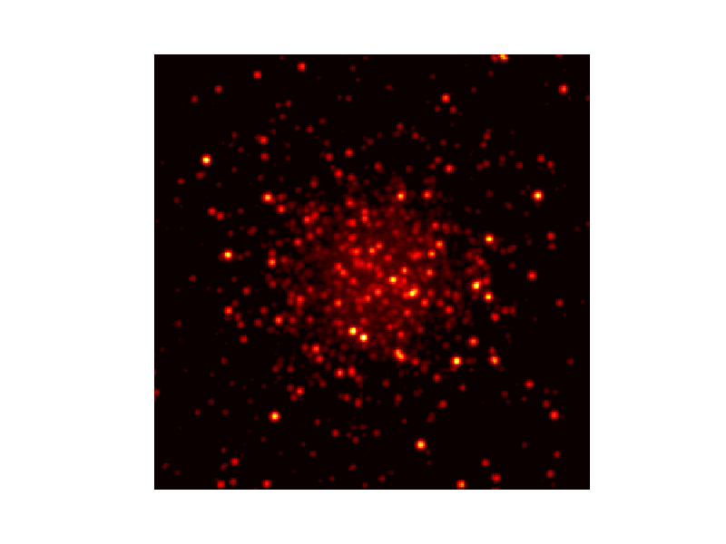
sqrt
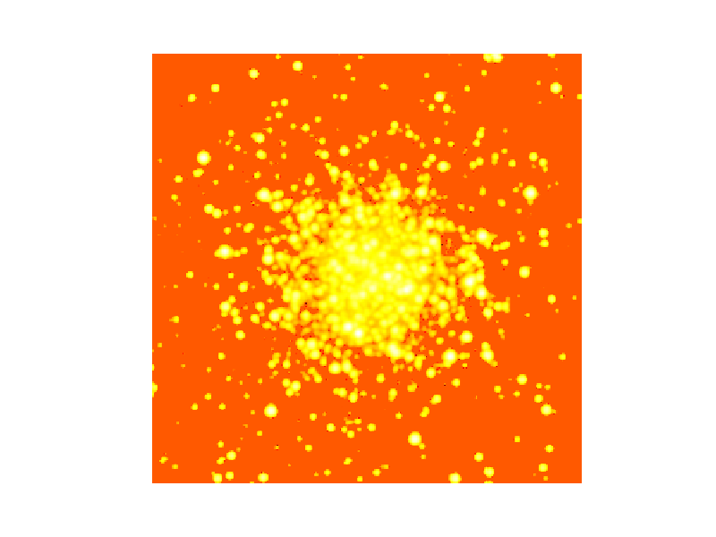
log10
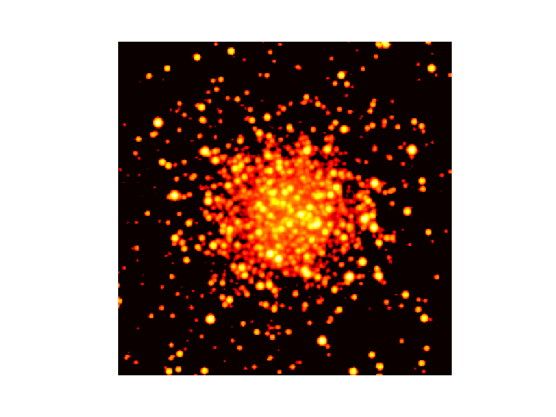
asinh(beta=1.0)
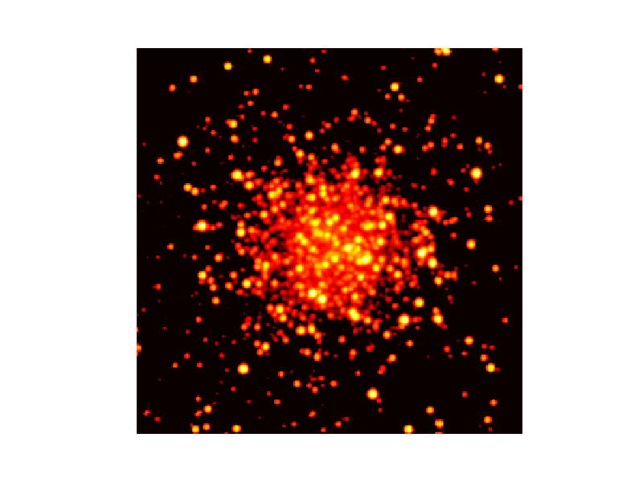
asinh(beta=5.0)
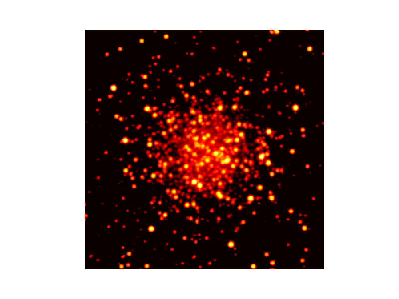
asinh(beta=20.0)
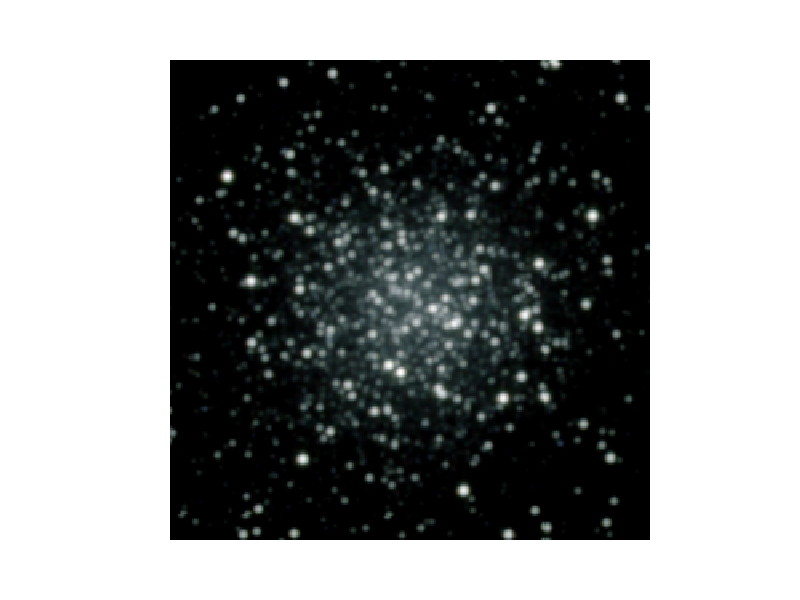
RGB type 1
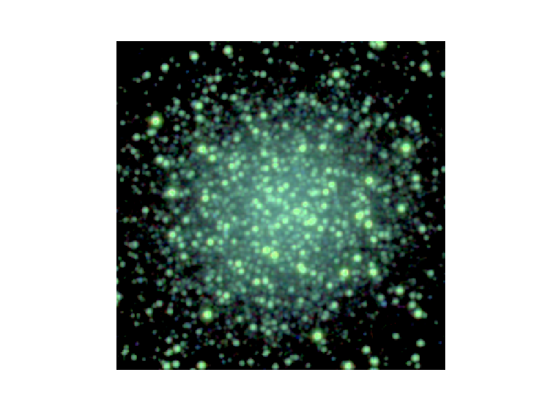
RGB type 2
linear
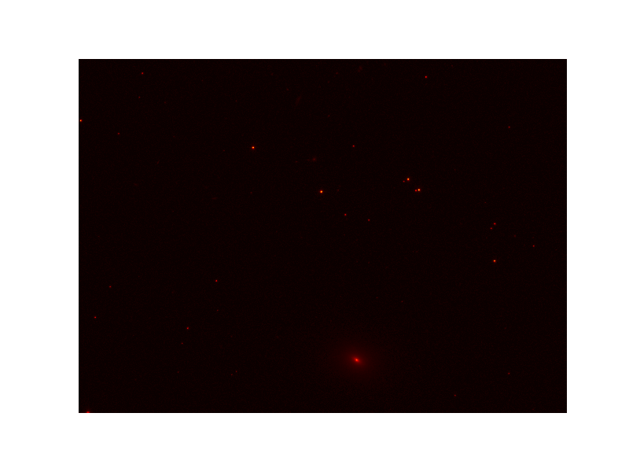
sqrt
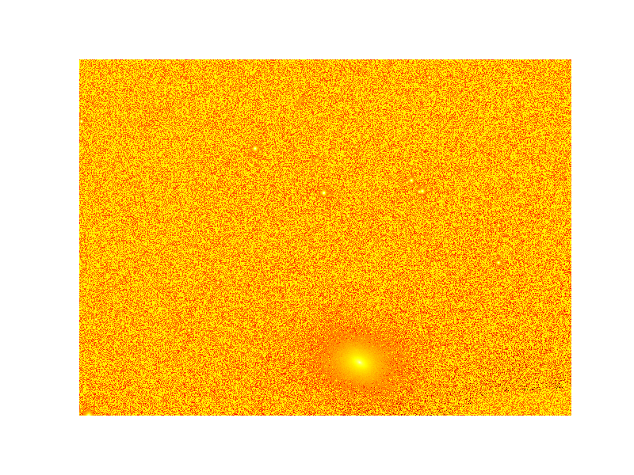
log10
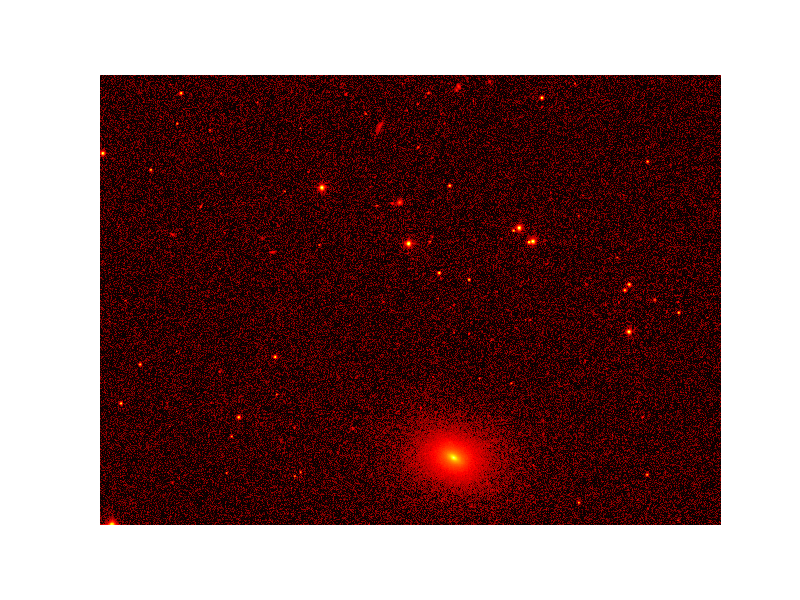
asinh(beta=1.0)
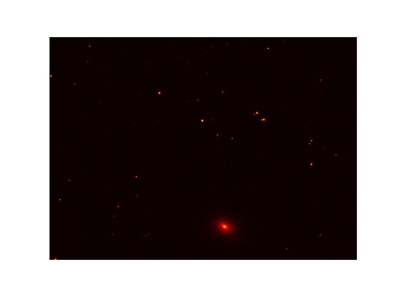
asinh(beta=5.0)
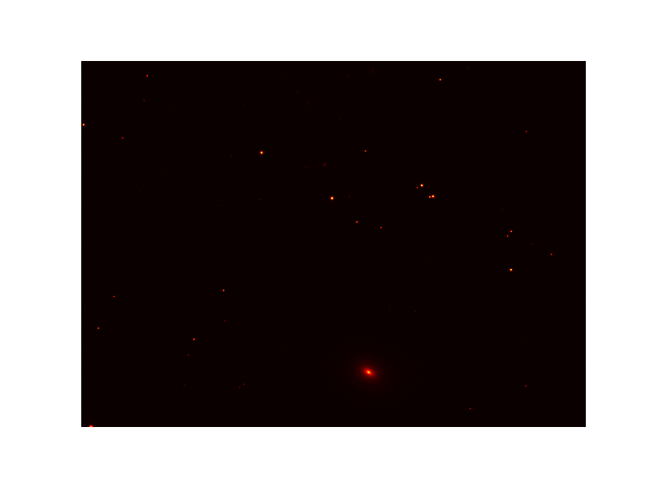
asinh(beta=20.0)
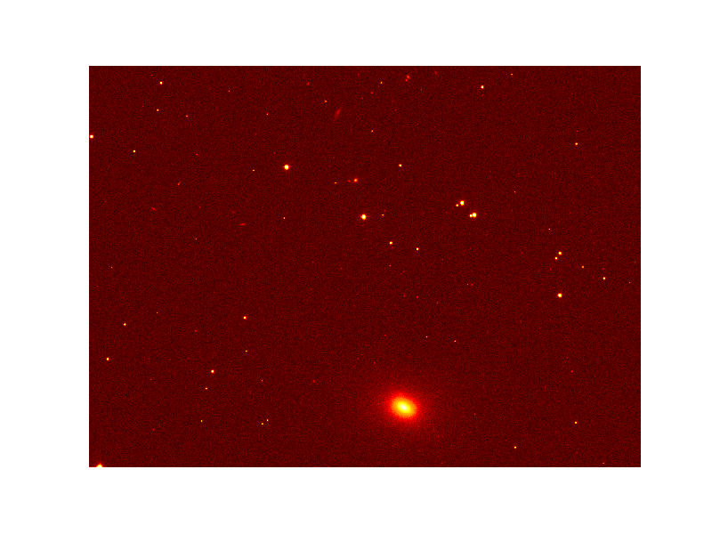
histogram equalization
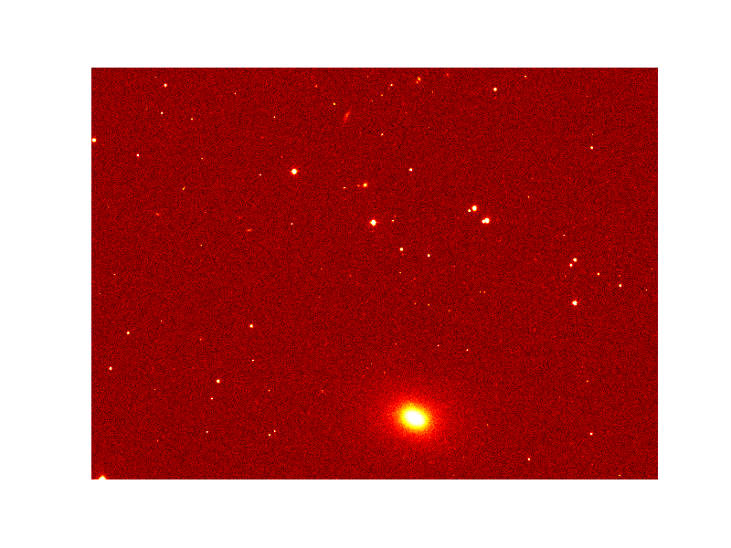
logistic distribution
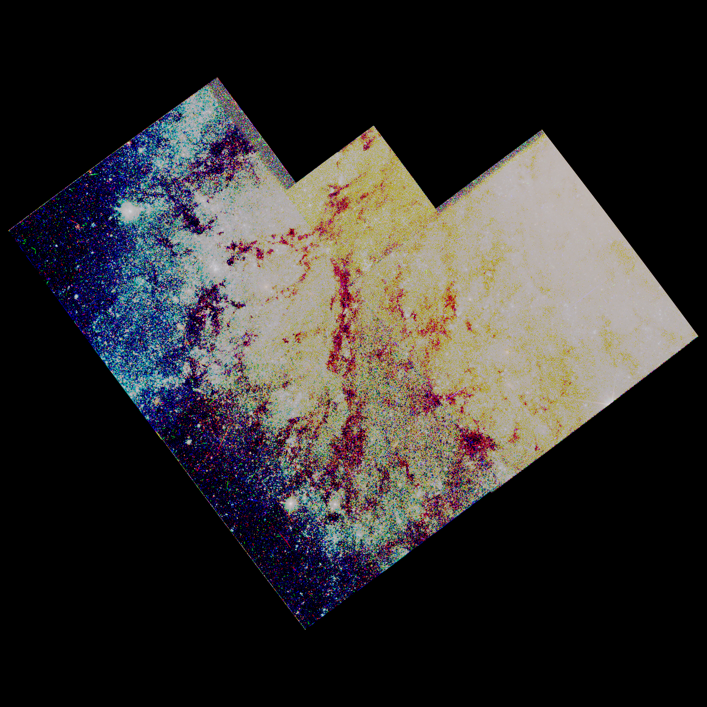
RGB type 1
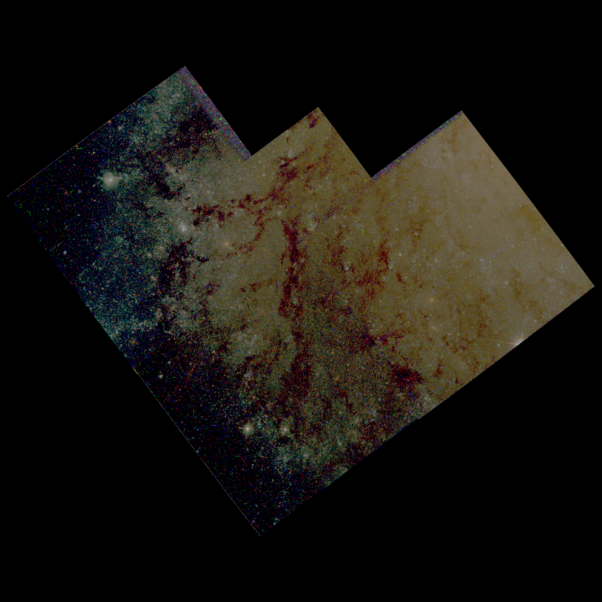
RGB type 2
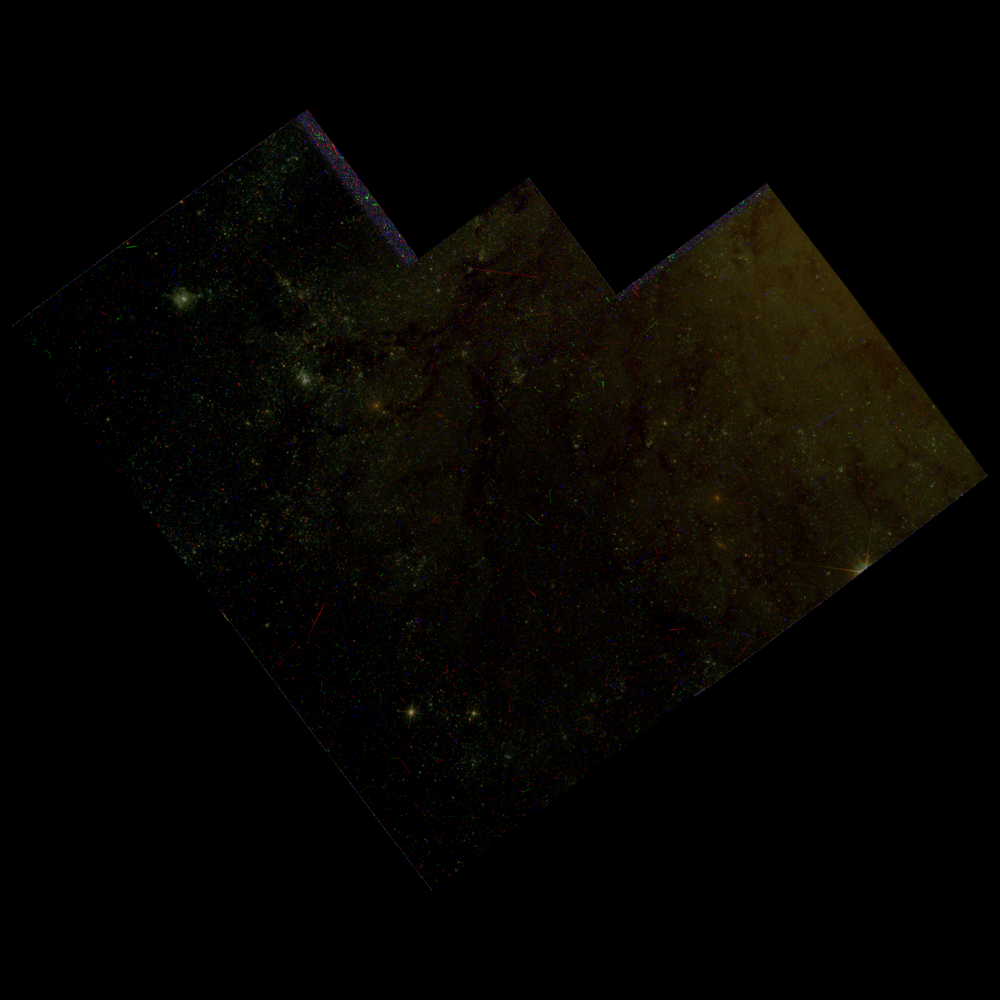
RGB type 3
| 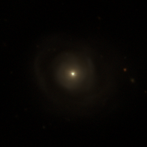 |
exrnormalize galaxy.exr galaxy.n.exr exrtopng galaxy.n.exr galaxy.n.png |
exrpptm -c 1.0 galaxy.n.exr galaxy.pp.exr exrnormalize galaxy.pp.exr galaxy.pp.n.exr exrtopng galaxy.pp.n.exr galaxy.pp.png |
|
| 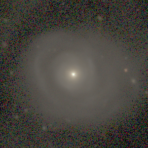 | exrblur galaxy.n.exr galaxy.b4.exr 0.25 exrchr galaxy.n.exr galaxy.b4.exr galaxy.chr.exr 0.1 exricamtm galaxy.chr.exr galaxy.b4.exr galaxy.icam.exr exrnormalize galaxy.icam.exr galaxy.icam.n.exr exrtopng galaxy.icam.n.exr galaxy.icam.png |
| 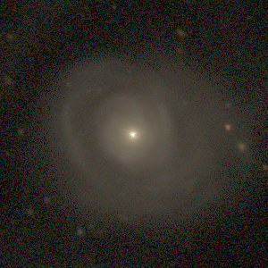 |
exrnlm galaxy.n.exr galaxy.b4.exr galaxy.nlm.exr exrtopng galaxy.nlm.exr galaxy.nlm.png |
If you want to see the converted EXR image of NGC 5548 by using HDR HTML viewer which is
generated by pfsouthdrhtml of pfstools,
click here!
ImageMagick and
GEGL also support the OpenEXR format.
Luminance HDR (a.k.a. Qtpfsgui) is a wondergul GUI
program to process HDR images including OpenEXR and FITS formats. If you are looking for a tool to
visualize FITS on Web interactively, you may find JS9
and jsFITS
interesting.